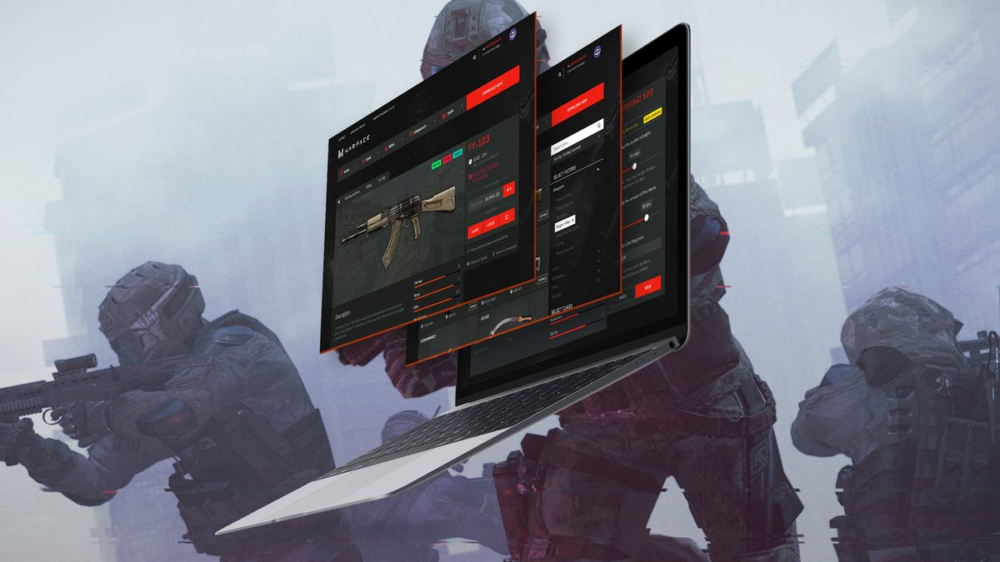
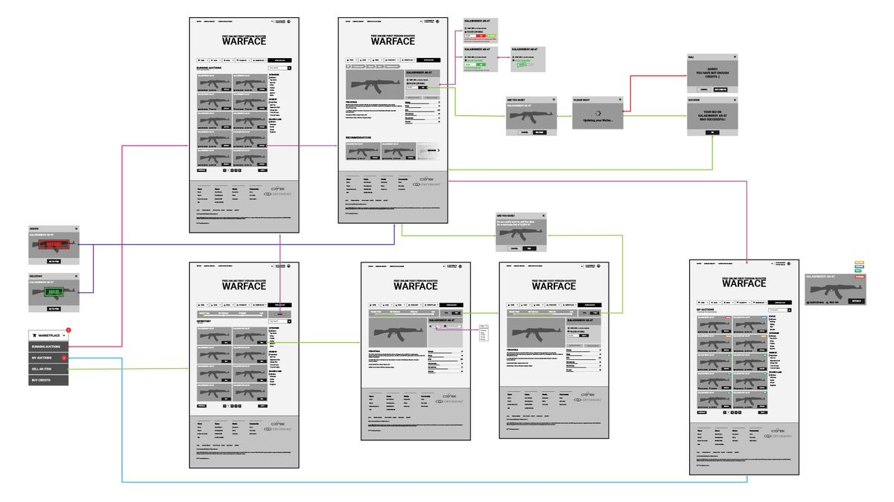
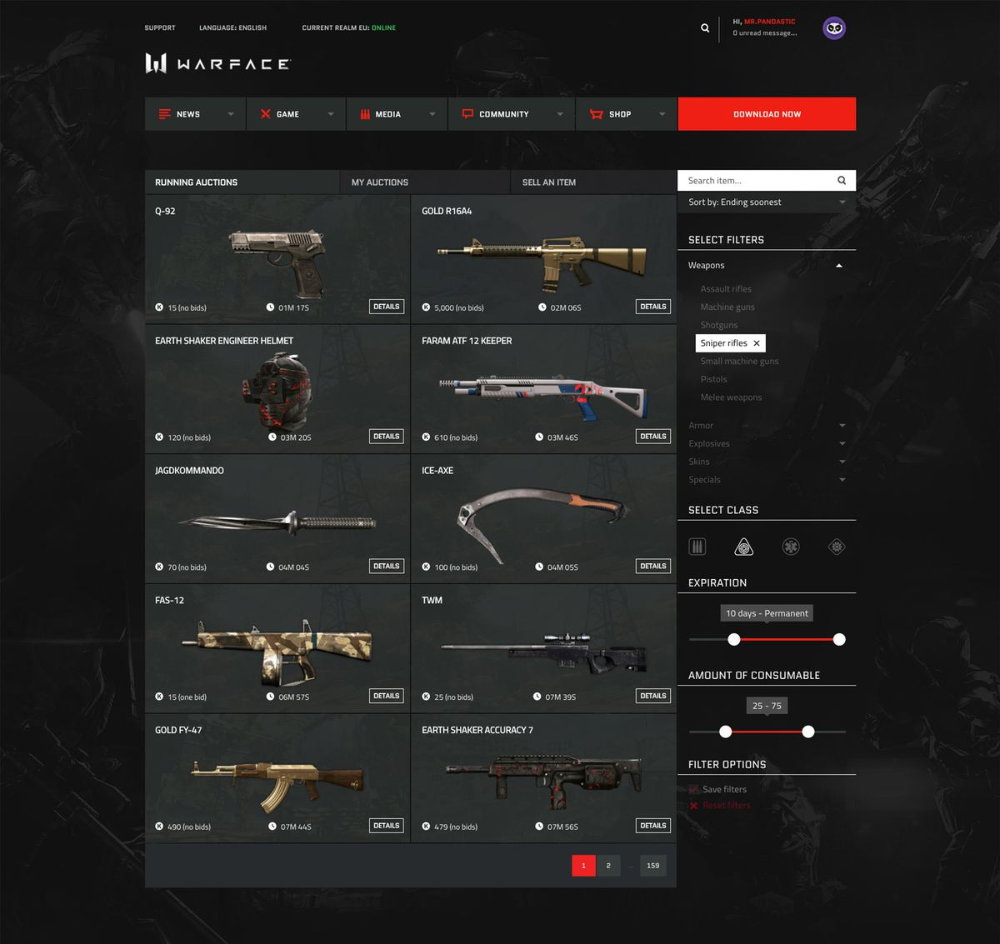
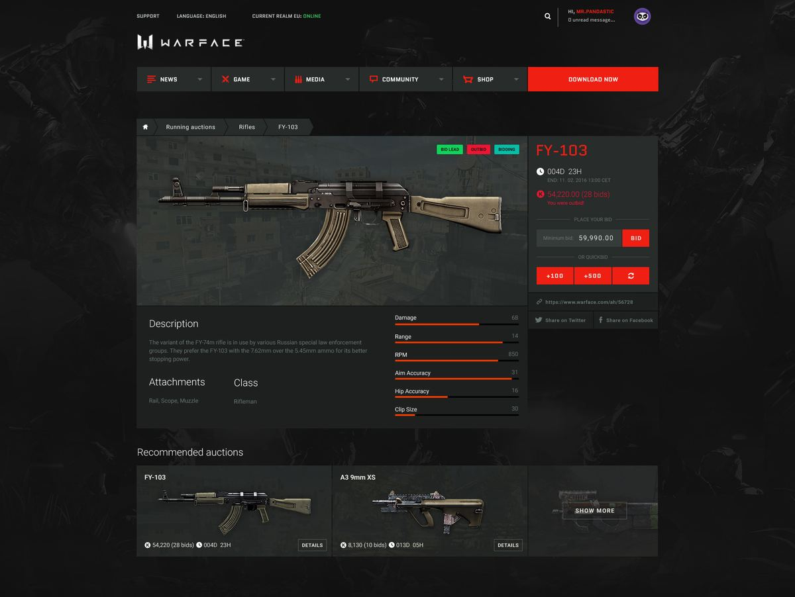

Warface Auction House ▓▒░
Senior Web Designer and UI developer @ Crytek - 2016

¬ What is Warface? ▫
Warface is an online multiplayer, cooperative and competitive first-person shooter from the legendary studio Crytek.
The game is free to play and uses micro-transactions to monetize. There are two types of currencies, one is collectable for in-game activity, the other one can be purchased for real money (USD/EUR). The credits can be used to buy loot boxes (slot machine) or restock consumables.
¬ Frustration ▫▪
Like other free-to-play games, the income is generated by selling cosmetic items to the players - keeping the power balance in the game intact and the matches fair.
These cosmetic items (skins) can be obtained from the loot boxes or as a reward for challenges.
The frustration starts when you have opened a thousand boxes and still don't have that particular item you are eager to use, but all of your foes are running around with it. There is no way to trade weapons or skins, you can try again. And again…
Players can feel this is a waste of money, because beyond virtual credits you need luck as well. This frustration can lead to abandoning the game or stopping purchases of virtual currency for loot boxes.
¬ Risk ▫▫
Just let the player trade items. Easy.
Yes, we had the same thoughts. Opening up trading brings a lot of risks to the table, which can even destroy the community.
One is fraud and stolen accounts. Fortunately, the number of hacked accounts, in general, is low and mostly used for trolling. But when you can actually "take" items, it becomes more desirable to get into someone else's account.
The second is connected to the first: because the majority of loot box purchases are made with credits purchased with hard currency, there is real money at stake.
Beyond the issues above, we had to consider the possible drop in box purchase and the death of excitement if we let the players just get what they want with a simple purchase.
¬ Solution ▫▪▪
Auctions are a long-standing form of trade that provides enough excitement and, thanks to the time factor, can be more secure than simple 1-on-1 trading.
For this to work, we needed to specify rules like bidding time options or available items.
Due to financial and manpower limits, the decision was to keep the auction house out of the game. The web HUB team was more agile and flexible in this matter, and this way we could increase the time players spend with the game while they are outside of it.
The HUB was already the centre of the community, with news and forum - the perfect place for the auctions. And an essential part of the process already happens there: the virtual credit purchase.
¬ Research ▫▪▫
To bring great ideas to the table, I spent some time exploring and analyzing other game and non-game auction and trading platforms.
Went through the World of Warcraft, Counter-Strike, Diablo trading platforms and obviously made my notes on eBay as well.
Meanwhile, I started involving a few players from the community in "user interviews" about the upcoming feature. This handful of community members became my "beta tester group" later.
¬ Design ▫▫▪
I started with the possible flow variations of the two options: selling and buying.

User flow illustrated to be able to start development before the final UI design.I had to plan the features to give players the most comfortable experience within limited development resources. To help this plan succeed, we decided on a soft launch: first a closed beta internally with the "beta group", then a 1-2 week long, unannounced public run.

The main view of the auction house with filtering and search.From the visual point of view, we already had a design system for the HUB, so I had to implement the new features based on it and extend the system if needed.
I created the mockups for each step and handed them over to the front-end devs to apply to the functioning interfaces they built from the wireframes.
I really wanted to keep the interface clean and easy to use. A few key features:
- Autocomplete search to be able to find the "sometimes confusingly named" special edition items
- Filter to class, to be able to narrow down to class-specific items. For example, shotguns for the medics.
- Breadcrumb navigation
- Quick and automatic bidding to create excitement for the last minutes
- Recommended other items to balance the demand and supply
- Display rarity and recommended price on the "sell" interface to help players define a fair and realistic price
- Notifications with quick bid and instant credit purchase if wallet balance is low, to have an excellent monetization opportunity

Item view with all in-game stats and bidding interface.¬ Results ▫▫▫
With the soft launch, we were able to balance the IT system and finetune the interfaces based on the feedback.
The Auction House became a huge success in the Warface community: credit sales increased by 30%+, and it became a widely used feature.
It became a useful tool for the marketing team to create "Auction Exclusive" items and have control over these rarities.
The market was continuously monitored and had a rotation in the list of available items to sell, so none of the items could flood the market.
¬ Takeaway ▫▪▪▪
I had to learn to compromise and plan for multiple iterations, to prioritize and aim for quick wins.
Actively involving the community is priceless - working with them like teammates really helped push this project to become a great addition to the game.
A little bonus story:
I had more ideas and requests from the community than we could fit in the scope, so after the project launched in my free time created too js bookmarklets that altered the page into a more compact and more powerful UI for the power users.
Unfortunately the Warface portal doesn't exist anmore but you can check few screencap gifs on my codepen .